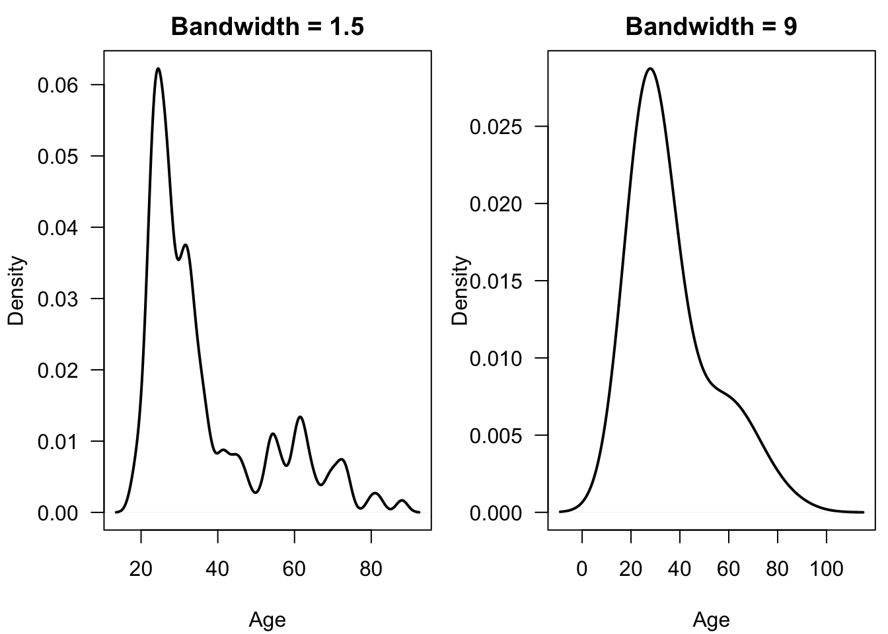
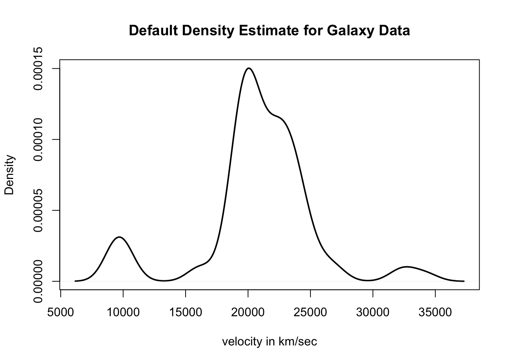

Chapter 8 Density Estimation
8.1 Introduction
In this section, we focus on methods for estimating a probability density function (pdf) \(f(x)\).
For a continuous random variable \(X\), areas under the probability density function are probabilities \[\begin{equation} P(a < X < b) = \int_{a}^{b} f(x) dx \nonumber \end{equation}\] and \(f(x)\) is related to the cumulative distribution function via \(f(x) = F'(x)\).
With parametric approaches to density estimation, you only need to estimate several parameters as these parameters completely determine the form of \(f(x)\).
For example, with a Gaussian distribution you only need to find \(\mu\) and \(\sigma^{2}\) to determine the form of \(f(x)\).
In a nonparametric approach to estimating a pdf, we will assume that our observations \(X_{1}, \ldots, X_{n}\) are an independent identically distribution sample from a distribution with pdf \(f(x)\), but otherwise we will make few assumptions about the particular form of \(f(x)\).
8.2 Histograms

Figure 8.1: Histogram of ages from kidney function data. Data retrieved from: https://web.stanford.edu/~hastie/CASI_files/DATA/kidney.txt
8.2.1 Definition
While histograms are often thought of as mainly a visualization tool, a histogram can also be thought of as an estimate of the density \(f(x)\).
To construct a histogram, you first need to define a series of “bins”: \(B_{1}, \ldots, B_{D_{n}}\).
Each bin is a left-closed interval. That is, the bins have the form \(B_{k} = [x_{0} + (k-1)h_{n}, x_{0} + kh_{n})\): \[\begin{eqnarray} B_{1} &=& [x_{0}, x_{0} + h_{n}) \nonumber \\ B_{2} &=& [x_{0} + h_{n}, x_{0} + 2h_{n}) \nonumber \\ &\vdots& \nonumber \\ B_{D_{n}} &=& [x_{0} + (D_{n}-1)h_{n}, x_{0} + D_{n}h_{n}) \nonumber \end{eqnarray}\]
- \(x_{0}\) - the origin
- \(h_{n}\) - bin width
\(D_{n}\) - number of bins
Histograms are based on the counts \(n_{k}\) of observations that fall into each bin: \[\begin{eqnarray} n_{k} &=& \# \text{ of observations falling into the $k^{th}$ bin } \nonumber \\ &=& \sum_{i=1}^{n} I( x_{0} + (k-1)h_{n} \leq X_{i} < x_{0} + kh_{n} ) \nonumber \end{eqnarray}\]
From the counts \(n_{k}\), the histogram estimate of the density at a point \(x\) in the \(k^{th}\) bin (that is if \(x_{0} + (k-1)h_{n} \leq x < x_{0} + kh_{n}\)), is defined as \[\begin{equation} \hat{f}_{h_{n}}^{H}(x) = \frac{n_{k}}{nh_{n}} \nonumber \tag{8.1} \end{equation}\]
Note: Histogram plots often show the actual bin counts \(n_{k}\) rather than the values of \(\hat{f}_{h_{n}}^{H}(x)\).
To see the motivation for the histogram estimate, notice that if we choose a relatively small value of \(h_{n} > 0\) \[\begin{equation} P(a < X_{i} < a + h_{n}) = \int_{a}^{a + h_{n}} f(t) dt \approx h_{n}f(c), \nonumber \end{equation}\] for any point \(a \leq c \leq a + h_{n}\).
So, for a point \(x \in B_{k}\), the expected value of \(\hat{f}_{h_{n}}^{H}(x)\) is \[\begin{eqnarray} E\{ \hat{f}_{h_{n}}^{H}(x) \} &=& \frac{1}{n h_{n}} E\{ n_{k} \} \nonumber \\ &=& \frac{1}{n h_{n}} \sum_{i=1}^{n} P( x_{0} + (k-1)h_{n} \leq X_{i} < x_{0} + kh_{n} ) \nonumber \\ &=& \frac{1}{h_{n}} P( x_{0} + (k-1)h_{n} \leq X_{i} < x_{0} + kh_{n} ) \nonumber \\ &\approx& f(x) \nonumber \end{eqnarray}\]
8.2.2 Histograms in R
- In R, histograms are computed using the
histfunction
- The breaks argument
- Default is “Sturges”. This is a method for finding the bin width.
- Can be a name giving the name of an algorithm for computing bin width (e.g., “Scott” and “FD”).
- Can also be a single number. This gives the number of bins used.
- Could be a vector giving the breakpoints between bins.
- Could also be a function which computes the number of bins.
The probability argument. If this is set to FALSE, then the bin counts are shown in the histogram. If set to TRUE, then the bin counts divided by \(nh_{n}\) are shown in the histogram.
The plot argument. If TRUE, a histogram is plotted whenever
histis called. If FALSE, a histogram is not plotted whenhistis called.
Note: The default for R, is to use right-closed intervals \((a, b]\). This can be changed using the right argument of the hist function.
- Let’s use the kidney function data again to demonstrate the use of histograms in R. This time we will focus on the age variable.
- You can plot a histogram of age just by calling the
histfunction.

- Use the
probability = TRUEargument to plot the density-estimate version of the histogram. This histogram should integrate to 1.
kidney.hist2 <- hist(kidney$age, main="Histogram of Age on Probability Scale",
xlab="Age from Kidney Data", probability=TRUE)
- In addition to generating a histogram plot, the histogram function also returns useful stuff.
## [1] "breaks" "counts" "density" "mids" "xname" "equidist"- breaks
- the boundaries for the histogram bins. The bins are of the form ( breaks[k], breaks[k+1] ]
- counts
- the number of observations falling into each bin
- density
- the value of the estimated density within each of the bins
- mids
- the midpoint of each of the bins
## [1] 10 20 30 40 50 60 70 80 90## [1] 4 74 35 11 13 12 6 2## The following sum should match the first element of kidney.hist$counts[1]
sum(kidney.hist$breaks[1] < kidney$age & kidney$age <= kidney.hist$breaks[2]) ## [1] 4- Let’s check that the density values returned by
histmatch our definition of the histogram density estimate in (8.1).
## [1] 0.002547771 0.047133758 0.022292994 0.007006369 0.008280255 0.007643312
## [7] 0.003821656 0.001273885## [1] 0.002547771 0.047133758 0.022292994 0.007006369 0.008280255 0.007643312
## [7] 0.003821656 0.0012738858.2.3 Performance of the Histogram Estimate and Bin Width Selection
8.2.3.1 Bias/Variance Decomposition
It is common to evaluate the performance of a density estimator through its mean-squared error (MSE).
In general, MSE is a function of bias and variance \[\begin{equation} \textrm{MSE} = \textrm{Bias}^2 + \textrm{Variance} \nonumber \end{equation}\]
We will first look at the mean-squared error of \(\hat{f}_{h_{n}}^{H}( x )\) at a single point \(x\) \[\begin{eqnarray} \textrm{MSE}\{ \hat{f}_{h_{n}}^{H}(x) \} &=& E\Big( \{ \hat{f}_{h_{n}}^{H}(x) - f(x) \}^{2} \Big) \nonumber \\ &=& E\Big( \Big[ \hat{f}_{h_{n}}^{H}(x) - E\{ \hat{f}_{n}^{H}(x) \} + E\{ \hat{f}_{h_{n}}^{H}(x) \} - f(x) \Big]^{2} \Big) \nonumber \\ &=& E\Big( \Big[ \hat{f}_{h_{n}}^{H}(x) - E\{ \hat{f}_{n}^{H}(x) \} \Big]^{2} \Big) + E\Big( \Big[ E\{ \hat{f}_{h_{n}}^{H}(x) \} - f(x) \Big]^{2} \Big) \nonumber \\ &+& 2E\Big( \Big[ \hat{f}_{h_{n}}^{H}(x) - E\{ \hat{f}_{n}^{H}(x) \}\Big]\Big[ E\{ \hat{f}_{h_{n}}^{H}(x) \} - f(x) \Big] \Big) \nonumber \\ &=& \underbrace{\textrm{Var}\{ \hat{f}_{h_{n}}^{H}(x) \}}_{\textrm{Variance}} + \underbrace{\Big( E\{ \hat{f}_{h_{n}}^{H}(x) \} - f(x) \Big)^{2} }_{\textrm{Bias Squared}} \nonumber \end{eqnarray}\]
In general, as the bin width \(h_{n}\) increases, the histogram estimate will have less variation but will become more biased.
8.2.3.2 Bias and Variance of the Histogram Estimate
Recall that, for a histogram estimate, we have \(D_{n}\) bins where the \(k^{th}\) bin takes the form \[\begin{equation} B_{k} = [x_{0} + (k-1)h_{n}, x_{0} + kh_{n}) \nonumber \end{equation}\]
For a point \(x \in B_{k}\), that “belongs” to the \(k^{th}\) bin, the histogram density estimate is \[\begin{equation} \hat{f}_{n}^{H}(x) = \frac{n_{k}}{nh_{n}}, \quad \textrm{ where } n_{k} = \textrm{ number of observations falling into bin } B_{k} \nonumber \end{equation}\]
To better examine what happens as \(n\) changes, we will define the function \(A_{h_{n}, x_{0}}(x)\) as the function which returns the index of the interval to which \(x\) belongs.
For example, if \(x_{0} = 0\), \(h_{n} = 1/3\), and \(x = 1/2\), then \(A_{h_{n}, x_{0}}( x ) = 2\).
So, we can also write the histogram density estimate at the value \(x\) as \[\begin{equation} \hat{f}_{h_{n}}^{H}(x) = \frac{n_{A_{h_{n}, x_{0}}(x)}}{ nh_{n} } \nonumber \end{equation}\]
- Exercise 8.1. Suppose \(x_{0} = -2\) and \(h_{n} = 1/2\). What are the values of \(A_{h_{n}, x_{0}}( -1 )\), \(A_{h_{n}, x_{0}}( 1.3 )\), and \(A_{h_{n}, x_{0}}( 0.75 )\)?
Note that we can express \(n_{A_{h_{n}, x_{0}}(x)}\) as \[\begin{equation} n_{A_{h_{n}, x_{0}}(x)} = \sum_{i = 1}^{n} I\Big( X_{i} \in B_{A_{h_{n}, x_{0}}(x)} \Big) \nonumber \end{equation}\]
Hence, is a binomial random variable with \(n\) trials and success probability \(p_{h_{n}, x_{0}}(x)\) (why?) \[\begin{equation} n_{A_{h_{n}}(x)} \sim \textrm{Binomial}\{ n, p_{h_{n}, x_{0}}(x) \} \nonumber \end{equation}\]
The success probability \(p_{h_{n}, x_{0}}(x)\) is defined as \[\begin{eqnarray} p_{h_{n}, x_{0}}(x) &=& P\Big\{ X_{i} \textrm{ falls into bin } B_{A_{h_{n}, x_{0}}}(x) \Big\} \nonumber \\ &=& \int_{x_{0} + (A_{h_{n}, x_{0}}(x) - 1)h_{n}}^{x_{0} + A_{h_{n}, x_{0}}(x)h_{n} } f(t) dt. \nonumber \end{eqnarray}\]
Because \(n_{A_{h_{n}, x_{0}}(x)}\) follows a binomial distribution, we know that \[\begin{eqnarray} E( n_{A_{h_{n}, x_{0}}(x)} ) &=& np_{h_{n}, x_{0}}(x) \nonumber \\ \textrm{Var}( n_{A_{h_{n}, x_{0}}(x)} ) &=& np_{h_{n}, x_{0}}(x)\{1 - p_{h_{n},x_{0}}(x) \} \nonumber \end{eqnarray}\]
So, we can express the bias of the histogram density estimate \(\hat{f}_{h_{n}}^{H}(x) = n_{A_{h_{n}, x_{0}}(x)}/(nh_{n})\) as \[\begin{eqnarray} \textrm{Bias}\{ \hat{f}_{h_{n}}^{H}(x) \} &=& E\{ \hat{f}_{h_{n}}^{H}(x) \} - f(x) \nonumber \\ &=& \frac{1}{nh_{n}}E( n_{A_{h_{n}, x_{0}}(x)} ) - f(x) \nonumber \\ &=& \frac{ p_{h_{n}, x_{0}}(x) }{ h_{n} } - f(x), \nonumber \end{eqnarray}\] and we can express the variance as: \[\begin{eqnarray} \textrm{Var}\{ \hat{f}_{h_{n}}^{H}(x) \} &=& \frac{1}{n^{2}h_{n}^{2}}\textrm{Var}( n_{A_{h_{n}, x_{0}}(x)} ) \nonumber \\ &=& \frac{ p_{h_{n}, x_{0}}(x)\{1 - p_{h_{n}, x_{0}}(x) \} }{ nh_{n}^{2} } \nonumber \end{eqnarray}\]
Using the approximation \(f(t) \approx f(x) + f'(x)(t - x)\) for \(t\) close to \(x\), we have that \[\begin{eqnarray} \frac{ p_{h_{n}, x_{0}}(x) }{ h_{n} } &=& \frac{1}{h_{n}}\int_{x_{0} + (A_{h_{n}, x_{0}}(x) - 1)h_{n}}^{x_{0} + A_{h_{n}, x_{0}}(x)h_{n} } f(t) dt \nonumber \\ &\approx& \frac{1}{h_{n}}\int_{x_{0} + (A_{h_{n}, x_{0}}(x) - 1)h_{n}}^{x_{0} + A_{h_{n}, x_{0}}(x)h_{n} } f(x) dt + \frac{f'(x)}{h_{n}}\int_{x_{0} + (A_{h_{n}}(x) - 1)h_{n}}^{x_{0} + A_{h_{n}, x_{0}}(x)h_{n} } (t - x) dt \nonumber \\ &=& f(x) + \frac{f'(x)}{2h_{n}}\Big[ (t - x)^{2}\Big|_{x_{0} + (A_{h_{n}, x_{0}}(x) - 1)h_{n}}^{x_{0} + A_{h_{n}, x_{0}}(x)h_{n} } \Big] \nonumber \\ &=& f(x) + \frac{f'(x)}{2h_{n}}\Big[ (x_{0} + A_{h_{n}, x_{0}}(x)h_{n})^{2} - (x_{0} + (A_{h_{n}, x_{0}}(x)-1)h_{n} )^{2} - 2xh_{n} \Big] \nonumber \\ &=& f(x) + \frac{f'(x)}{2h_{n}}\Big[ 2x_{0}A_{h_{n}, x_{0}}(x)h_{n} + A_{h_{n}, x_{0}}^{2}(x)h_{n}^{2} - 2x_{0}(A_{h_{n}, x_{0}}(x)-1)h_{n} \nonumber \\ & & - (A_{h_{n}, x_{0}}(x)-1)^{2}h_{n}^{2} - 2xh_{n} \Big] \nonumber \\ &=& f(x) + \frac{f'(x)}{2h_{n}}\Big[ 2x_{0}h_{n} + 2A_{h_{n}, x_{0}}(x)h_{n}^{2} - h_{n}^{2} - 2xh_{n} \Big] \nonumber \\ &=& f(x) + f'(x)\Big[ h_{n}/2 - [ x - x_{0} - \{ A_{h_{n}, x_{0}}(x) - 1 \}h_{n} ] \Big] \nonumber \end{eqnarray}\]
So, the bias of the histogram density estimate \(\hat{f}_{h_{n}}^{H}(x)\) is \[\begin{eqnarray} \textrm{Bias}\{ \hat{f}_{h_{n}}^{H}(x) \} &=& \frac{ p_{h_{n}, x_{0}}(x) }{ h_{n} } - f(x) \nonumber \\ &\approx& f'(x)\Big[ h_{n}/2 - [ x - x_{0} - \{ A_{h_{n}, x_{0}}(x) - 1 \}h_{n} ] \Big] \tag{8.2} \end{eqnarray}\]
Choosing a very small bin width \(h_{n}\) will result in a small bias because the left endpoint of the bin \(x_{0} + (A_{h_{n}}(x) - 1)h_{n}\) will always be very close to \(x\).
Now, let us turn to the variance of the histogram estimate at \(x\): \[\begin{eqnarray} \textrm{Var}\{ \hat{f}_{h_{n}}^{H}(x) \} &=& \frac{p_{h_{n}, x_{0}}(x) }{nh_{n}^{2}}\{1 - p_{h_{n}, x_{0}}(x) \} \nonumber \\ &\approx& \frac{f(x) + f'(x)\{ \tfrac{h_{n}}{2} - [ x - x_{0} - (A_{h_{n}, x_{0}}(x) - 1)h_{n} ] \}}{nh_{n}}\{1 - p_{h_{n}, x_{0}}(x)\} \nonumber \\ &\approx& \frac{f(x)}{n h_{n} } \tag{8.3} \end{eqnarray}\]
For a more detailed description of the above approximation see Scott (1979) or Chapter 6 of Wasserman (2006).
Note that large bin widths will reduce the variance of \(\hat{f}_{h_{n}}^{H}(x)\).
8.2.3.3 Pointwise Approximate Mean Squared Error
Using (8.3) and (8.2), the approximate mean-squared error (AMSE) of the histogram density estimate at a particular point \(x\) is given by \[\begin{eqnarray} \textrm{MSE}\{ \hat{f}_{h_{n}}^{H}(x) \} &=& E\Big( \{ \hat{f}_{h_{n}}^{H}(x) - f(x) \}^{2} \Big) \nonumber \\ &=& \Big( \textrm{Bias}\{ \hat{f}_{h_{n}}^{H}(x) \} \Big)^{2} + \textrm{Var}\{ \hat{f}_{h_{n}}^{H}(x) \} \nonumber \\ &\approx& \frac{h_{n}^{2}[f'(x)]^{2} }{4} - h_{n}f'(x)[ x - x_{0} - \{ A_{h_{n}, x_{0}}(x) - 1 \}h_{n} ] \nonumber \\ &+& [f'(x)]^{2}\Big( x - x_{0} - \{ A_{h_{n}, x_{0}}(x) - 1 \}h_{n} \Big)^{2} + \frac{f(x)}{n h_{n} } \nonumber \\ &=& \textrm{AMSE}\{ \hat{f}_{h_{n}}^{H}(x) \} \tag{8.4} \end{eqnarray}\]
For any approach to bin width selection, we should have \(h_{n} \longrightarrow 0\) and \(nh_{n} \longrightarrow \infty\).
This MSE approximation depends on a particular choice of \(x\).
Difficult to use (8.4) as a criterion for selecting the bandwidth because the best choice of \(h_{n}\) will usually depend on your choice of \(x\).
8.2.3.4 Integrated Mean Squared Error and Optimal Histogram Bin Width
Using the approximate mean integrated squared error (AMISE) allows us to find an optimal bin width that does not depend on a particular choice of \(x\).
The AMISE is defined as \[\begin{eqnarray} \textrm{AMISE}\{ \hat{f}_{h_{n}}^{H} \} &=& E\Big\{ \int_{-\infty}^{\infty} \{ \hat{f}_{h_{n}}^{H}(x) - f(x) \}^{2}dx \Big\} \nonumber \\ &=& \int_{-\infty}^{\infty} \textrm{MSE}\{ \hat{f}_{h_{n}}^{H}(x) \} dx \nonumber \end{eqnarray}\] Using the previously derived approximation (8.4) for the AMSE, it can be shown that \[\begin{eqnarray} \textrm{MISE}\{ \hat{f}_{h_{n}}^{H} \} \approx \frac{1}{nh_{n}} + \frac{h_{n}^{2}}{12}\int_{-\infty}^{\infty} [f'(x)]^{2} dx \tag{8.5} \end{eqnarray}\]
To select the optimal bin width, we minimize the MISE as a function of \(h_{n}\).
Minimizing (8.5), as a function of \(h_{n}\) yields the following formula for the optimal bin width \[\begin{equation} h_{n}^{opt} = \Big( \frac{6}{n \int_{-\infty}^{\infty} [f'(x)]^{2} dx} \Big)^{1/3} = C n^{-1/3} \tag{8.6} \end{equation}\]
Notice that \(h_{n}^{opt} \longrightarrow 0\) and \(nh_{n}^{opt} \longrightarrow \infty\) as \(n \longrightarrow \infty\).
Notice also that the optimal bin width depends on the unknown quantity \(\int_{-\infty}^{\infty} [f'(x)]^{2} dx\).
8.2.4 Choosing the Histogram Bin Width
- We will mention three rules for selecting the bin width of a histogram.
Both the Scott and the FD rule are based on the optimal bin width formula (8.6).
The main problem with using the formula (8.6) is the presence of \(\int_{-\infty}^{\infty} [f'(x)]^{2} dx\).
Solution: See what this quantity looks like if we assume that \(f(x)\) corresponds to a \(\textrm{Normal}(\mu, \sigma^{2})\) density.
With the assumption that \(f(x) = \textrm{Normal}(\mu, \sigma^{2})\): \[\begin{equation} h_{n}^{opt} = 3.5 \sigma n^{-1/3} \nonumber \end{equation}\]
Scott rule: Use \(h_{n}^{*} = 3.5 \hat{\sigma} n^{-1/3}\), where \(\hat{\sigma}\) denotes the sample standard deviation.
FD rule: Use \(h_{n}^{*} = 2 \times IQR \times n^{-1/3}\). This is a somewhat more robust choice of \(h_{n}\) as it is not as sensitive to outliers.
Sturges rule: The bin width is chosen so that we have \(1 + log_{2}(n)\) bins. This choice tends to give wide intervals.

8.3 A Box-type Density Estimate
A related estimator \(\hat{f}_{h_{n}}^{B}\) of the density \(f(x)\) uses a “sliding bin” at each point \(x\) to calculate the estimate of \(f(x)\).
Specifically, the “box estimate” \(\hat{f}_{h_{n}}^{B}(x)\) at the point \(x\) is defined as \[\begin{eqnarray} \hat{f}_{h_{n}}^{B}(x) &=& \frac{1}{2nh_{n}} \Big[ \# \text{ of observations falling in the interval } (x - h_{n}, x + h_{n}) \Big] \nonumber \\ &=& \frac{1}{2nh_{n}} \sum_{i=1}^{n} I(x - h_{n} < X_{i} < x + h_{n} ) \nonumber \end{eqnarray}\]
In other words, for each \(x\) we are forming a bin of width \(2h_{n}\) around \(x\), and we are counting the number of observations that fall in this bin.
You can think of each point \(x\) as being the center of its own bin.
The expectation of the box estimator at the point \(x\) is
\[\begin{equation} E \{ \hat{f}_{h_{n}}^{B}(x) \} = \frac{1}{2h_{n}} P(x - h_{n} < X_{i} < x + h_{n}) \approx f(x) \nonumber \end{equation}\]
Unlike the histogram, the box estimate does not require the density estimate to be constant within each bin.
Also, histograms can have dramatic changes near the bin edges while the box estimate suffers less from this problem.
However, plots of the box estimate will still largely be non-smooth and have a “jagged” appearance.
- We can also express \(\hat{f}_{h_{n}}^{B}(x)\) in the following way: \[\begin{equation} \hat{f}_{h_{n}}^{B}(x) = \frac{1}{n} \sum_{i=1}^{n} \frac{1}{h_{n}} w\Big( \frac{X_{i} - x}{h_{n}} \Big), \tag{8.7} \end{equation}\] where \(w(t)\) is defined as the following “box function” \[\begin{equation} w(t) = \begin{cases} \frac{1}{2} & \textrm{ if } |t| < 1 \nonumber \\ 0 & \textrm{ otherwise } \nonumber \end{cases} \end{equation}\]
While the estimator \(\hat{f}_{h_{n}}^{B}\) does seem reasonable, it always results in density estimates which are not “smooth.”
Most kernel density estimates are formed by replacing the box function \(w(t)\) with a smoother function.
Exercise 8.2. Write an R function which computes the \(\hat{f}_{h_{n}}^{B}(x)\) at a collection of specified points.
Exercise 8.3. Suppose we have observations \((X_{1}, X_{2}, X_{3}, X_{4}) = (-1, 0, 1/2, 1)\). Assuming \(h_{n} = 1/2\), plot \(w(\tfrac{X_{i} - x}{h_{n}})/nh_{n}\) for \(i = 1, \ldots, 4\) and plot the box density estimate \(\hat{f}_{h_{n}}^{B}(x)\).
Exercise 8.4. Suppose we have i.i.d. observations \(X_{1}, \ldots, X_{n} \sim F\) where the cdf \(F\) is assumed to be continuous. What is \(\textrm{Var}\{ \hat{f}_{h_{n}}^{B}(x) \}\)?
8.4 Kernel Density Estimation
8.4.1 Definition
Kernel density estimates are a generalization of the box-type density estimate \(\hat{f}_{h_{n}}^{B}(x)\).
With kernel density estimation, we replace the “box function” in (8.7) with a function \(K(\cdot)\) which is much smoother.
The function \(K(\cdot)\) will also give higher weight to observations which are closer to \(x\) than those that are further away from \(x\).
A kernel density estimator \(\hat{f}_{h_{n}}(x)\) of the density \(f(x)\) is defined as \[\begin{equation} \hat{f}_{h_{n}}(x) = \frac{1}{nh_{n}} \sum_{i=1}^{n} K\Big( \frac{x - X_{i}}{h_{n}} \Big) \tag{8.8} \end{equation}\]
The function \(K( \cdot )\) is referred to as the kernel function.
The scalar term \(h_{n} > 0\) is called the bandwidth.
The value of the bandwidth \(h_{n}\) largely determines how “bumpy” the density estimate will appear.
The appearance and the statistical performance of \(\hat{f}_{h_{n}}(x)\) depend much more on the value of \(h_{n}\) than on the choice of kernel function.

Kernel functions are usually chosen so that \[\begin{equation} K(t) \geq 0 \quad \textrm{ for all } t \nonumber \end{equation}\] and that they also satisfy the following properties: \[\begin{eqnarray} K(t) = K(-t) \qquad \int_{-\infty}^{\infty} K(t) dt = 1 \nonumber \qquad \int_{-\infty}^{\infty} K^{2}(t) dt < \infty \nonumber \end{eqnarray}\]
You can think of \(K(u)\) as a probability density function which is symmetric around \(0\).
Some of the most common choices of kernel functions include \[\begin{eqnarray} \textrm{Gaussian} :&& \quad K(u) = \exp(-u^{2}/2)/\sqrt{2\pi} \nonumber \\ \textrm{Epanechnikov} :&& \quad K(u) = \tfrac{3}{4\sqrt{5}}(1 - \tfrac{1}{5} u^{2}) I(|u| < \sqrt{5}) \nonumber \\ \textrm{biweight} :&& \quad K(u) = \tfrac{15}{16\sqrt{7}}(1 - \tfrac{1}{7} u^{2})^{2} I(|u| < \sqrt{7}) \nonumber \end{eqnarray}\]
When plotting \(\frac{1}{n h_{n}}K\big( \tfrac{x - X_{i}}{h_{n}} \big)\) as a function of \(x\), it should look like a “small hill” centered around \(X_{i}\).
As \(h_{n}\) decreases, \(\frac{1}{n h_{n}}K\big( \tfrac{x - X_{i}}{h_{n}} \big)\) becomes more strongly concentrated around \(X_{i}\) and has a higher peak.
The kernel density estimate \(\hat{f}_{h_{n}}(x)\) is a sum of all these “small hills”.
The nice thing about (8.8) is that it guarantees that \(\hat{f}_{h_{n}}(x)\) is a probability density function \[\begin{eqnarray} \int_{-\infty}^{\infty} \hat{f}_{h_{n}}(x) dx &=& \int_{-\infty}^{\infty} \frac{1}{nh_{n}} \sum_{i=1}^{n} K\Big( \frac{x - X_{i}}{h_{n}} \Big) dx \nonumber \\ &=& \frac{1}{n} \sum_{i=1}^{n} \int_{-\infty}^{\infty} \frac{1}{h_{n}} K\Big( \frac{x - X_{i}}{h_{n}} \Big) dx \nonumber \\ &=& 1 \nonumber \end{eqnarray}\]
Also, formula (8.8) guarantees that \(\hat{f}_{h_{n}}(x)\) inherits the smoothness properties of \(K(u)\) \[\begin{equation} \hat{f}_{h_{n}}'(x) = \frac{1}{n} \sum_{i=1}^{n} \frac{1}{h_{n}^{2}} K'\Big( \frac{x - X_{i}}{h_{n}} \Big) \nonumber \end{equation}\]
8.4.2 Bias, Variance, and AMISE of Kernel Density Estimates
- As with the bin width in histogram estimation, the bias/variance tradeoff drives the best choice of the bandwidth \(h_{n}\) in kernel density estimation.
Approximate Bias
The exact expectation of a kernel density estimate \(\hat{f}_{h_{n}}(x)\) is \[\begin{eqnarray} E\{ \hat{f}_{h_{n}}(x) \} &=& \frac{1}{nh_{n}} \sum_{i=1}^{n} E\Big\{ K\Big( \frac{x - X_{i}}{h_{n}} \Big) \Big\} \nonumber \\ &=& \frac{1}{h_{n}} E\Big\{ K\Big( \frac{x - X_{1}}{h_{n}} \Big) \Big\} \nonumber \\ &=& \frac{1}{h_{n}} \int_{-\infty}^{\infty} K\Big( \frac{x - t}{h_{n}} \Big) f(t) dt \nonumber \\ &=& \int_{-\infty}^{\infty} K( u ) f(x - uh_{n}) du \nonumber \end{eqnarray}\] Above, we used the substitution \(u = (x - t)/h_{n}\).
Thus, the exact bias of \(\hat{f}_{h_{n}}(x)\) is \[\begin{eqnarray} \textrm{Bias}\{ \hat{f}_{h_{n}}(x) \} &=& \int_{-\infty}^{\infty} K( u ) f(x - uh_{n}) du - f(x) \nonumber \\ &=& \int_{-\infty}^{\infty} K( u ) \{ f(x - uh_{n}) - f(x) \} du \tag{8.9} \end{eqnarray}\]
The expression for bias shown in (8.9) will only have a closed form for special choices of \(K(\cdot)\) and \(f( \cdot )\).
Nevertheless, we can get a reasonable approximation of this bias for small \(h_{n}\).
To approximate the bias for small \(h_{n}\), we can use the following Taylor series approximation \[\begin{equation} f(x - uh_{n}) - f(x) \approx -uh_{n}f'(x) + \frac{u^{2}h_{n}^{2}}{2} f''(x) \nonumber \end{equation}\] Plugging this approximation into our expression for the bias in (8.9) gives: \[\begin{eqnarray} \textrm{Bias}\{ \hat{f}_{h_{n}}(x) \} &\approx& -h_{n}f'(x) \int_{-\infty}^{\infty} u K( u ) du + \frac{h_{n}^{2}f''(x)}{2} \int_{-\infty}^{\infty} u^{2} K( u ) du \nonumber \\ &=& \frac{h_{n}^{2}f''(x)}{2} \int_{-\infty}^{\infty} u^{2} K( u ) du \nonumber \\ &=& \frac{h_{n}^{2}f''(x)\mu_{2}(K)}{2} \qquad \textrm{ where } \mu_{2}(K) = \int_{-\infty}^{\infty} u^{2} K( u ) du \nonumber \\ &=& \textrm{ABias}\{ \hat{f}_{h_{n}}(x) \} \tag{8.10} \end{eqnarray}\] Here, \(\textrm{ABias}\{ \hat{f}_{h_{n}}(x) \}\) stands for the approximate bias.
Formula (8.10) shows the direct dependence of the magnitude of bias on the value of the bandwidth.
Formula (8.10) also shows the effect of the curvature \(f''(x)\) of the density on the magnitude of bias.
Approximate Variance
The exact variance of a kernel density estimate \(\hat{f}_{h_{n}}(x)\) is \[\begin{eqnarray} \textrm{Var}\{ \hat{f}_{h_{n}}(x) \} &=& \frac{1}{n^{2}h_{n}^{2}} \sum_{i=1}^{n} \textrm{Var}\Big\{ K\Big( \frac{x - X_{i}}{ h_{n} } \Big) \Big\} \nonumber \\ &=& \frac{1}{nh_{n}^{2}} \textrm{Var}\Big\{ K\Big( \frac{x - X_{1}}{ h_{n} } \Big) \Big\} \nonumber \\ &=& \frac{1}{n h_{n}^{2} }\int_{-\infty}^{\infty} K^{2}\Big( \frac{x - t}{h_{n}} \Big) f(t) dt - \frac{1}{n}\Big[ \frac{1}{h_{n}}E\Big\{ K\Big( \frac{x - X_{1}}{ h_{n} } \Big) \Big\} \Big]^{2} \nonumber \\ &=& \frac{1}{n h_{n} }\int_{-\infty}^{\infty} K^{2}(u) f(x - uh_{n}) du - \frac{1}{n}\Big[ \textrm{Bias}\{ \hat{f}_{h_{n}}(x) \} + f(x) \Big]^{2} \nonumber \end{eqnarray}\]
We will ignore the last term because it is of order \(1/n\). Then, if we use the Taylor series approximation \(f(x - uh_{n}) = f(x) - uh_{n}f'(x) + ...\), we have: \[\begin{eqnarray} \textrm{Var}\{ \hat{f}_{h_{n}}(x) \} &\approx& \frac{f(x)}{n h_{n} }\int_{-\infty}^{\infty} K^{2}(u) du - \frac{f'(x)}{n}\int_{-\infty}^{\infty} u K^{2}(u) du + ... \nonumber \\ &\approx& \frac{f(x)\kappa_{2}(K) }{n h_{n} } \quad \textrm{ where } \kappa_{2}(K) = \int_{-\infty}^{\infty} K^{2}( u ) du \nonumber \\ &=& \textrm{AVar}\{ \hat{f}_{h_{n}}(x) \} \nonumber \end{eqnarray}\]
Approximate Mean Integrated Squared Error (AMISE)
Using our approximations for the bias and variance, we can get an approximate expression for the mean-squared error of \(\hat{f}_{h_{n}}(x)\) at the point \(x\) \[\begin{eqnarray} \textrm{MSE}\{ \hat{f}_{h_{n}}(x) \} &\approx& \textrm{AVar}\{ \hat{f}_{h_{n}}(x) \} + \Big( \textrm{ABias}\{ \hat{f}_{h_{n}}(x) \} \Big)^{2} \nonumber \\ &=& \frac{f(x)\kappa_{2}(K) }{n h_{n} } + \frac{h_{n}^{4}[f''(x)]^{2}\mu_{2}^{2}(K)}{4} \tag{8.11} \end{eqnarray}\]
- Notice that if we want the MSE to go to \(0\) as \(n \longrightarrow \infty\), we need the
following two things to happen:
- \(h_{n} \longrightarrow 0\) as \(n \longrightarrow \infty\)
- \(n h_{n} \longrightarrow \infty\) as \(n \longrightarrow \infty\)
- The approximate mean integrated squared error (AMISE) of the kernel density estimator is obtained by integrating the approximation (8.11) for MSE across \(x\) \[\begin{eqnarray} \textrm{AMISE}\{ \hat{f}_{h_{n}} \} &=& \frac{\kappa_{2}(K) }{n h_{n} }\int_{-\infty}^{\infty} f(x) dx + \frac{h_{n}^{4}\mu_{2}^{2}(K)}{4} \int_{-\infty}^{\infty} [f''(x)]^{2} dx \nonumber \\ &=& \frac{\kappa_{2}(K) }{n h_{n} } + \frac{h_{n}^{4}\mu_{2}^{2}(K)}{4} \int_{-\infty}^{\infty} [f''(x)]^{2} dx \tag{8.12} \end{eqnarray}\]
8.4.3 Bandwidth Selection with the Normal Reference Rule and Silverman’s “Rule of Thumb”
If we differentiate the formula for AMISE given in (8.12) with respect to \(h_{n}\) and set it to zero, we get the following equation for \(h_{n}^{opt}\) which would be the bandwidth minimizing \(\textrm{AMISE}\{ \hat{f}_{h_{n}} \}\): \[\begin{equation} 0 = \frac{-\kappa_{2}(K) }{n (h_{n}^{opt})^{2} } + (h_{n}^{opt})^{3}\mu_{2}^{2}(K) \int_{-\infty}^{\infty} [f''(x)]^{2} dx \nonumber \end{equation}\]
The solution of the above equation gives the optimal bandwidth: \[\begin{equation} h_{n}^{opt} = n^{-1/5} \Big( \int_{-\infty}^{\infty} [f''(x)]^{2} dx \Big)^{-1/5}\kappa_{2}(K)^{1/5} \mu_{2}(K)^{-2/5} \nonumber \end{equation}\]
For the case of a Gaussian kernel, \[\begin{eqnarray} \kappa_{2}(K) &=& \frac{1}{2\pi}\int_{-\infty}^{\infty} e^{-u^{2}} du = \frac{1}{2\sqrt{\pi}}\int_{-\infty}^{\infty} \frac{\sqrt{2}}{\sqrt{2\pi}} e^{-u^{2}} du = \frac{1}{2\sqrt{\pi}} \nonumber \\ \mu_{2}(K) &=& \frac{1}{\sqrt{2\pi}}\int_{-\infty}^{\infty} u^{2}e^{-u^{2}/2} du = 1 \nonumber \end{eqnarray}\] so that, in the case of a Gaussian kernel, the optimal bandwidth is given by \[\begin{equation} h_{n}^{opt} = n^{-1/5} (2\sqrt{\pi})^{-1/5} \Big( \int_{-\infty}^{\infty} [f''(x)]^{2} dx \Big)^{-1/5} \nonumber \end{equation}\]
However, the optimal bandwidth \(h_{n}^{opt}\) for a kernel density estimate depends on the unknown quantity \[\begin{equation} \int_{-\infty}^{\infty} [f''(x)]^{2} dx \nonumber \end{equation}\]
Similar to the Scott and FD rules for choosing the bin width of histogram, one way of setting the bandwidth \(h_{n}\) of a kernel density estimate is to use the value of \(\int_{-\infty}^{\infty} [f''(x)]^{2} dx\) when it is assumed that \(f(x)\) is the density of a \(\textrm{Normal}(0, \sigma^{2})\) random variable.
If \(f(x) = \textrm{Normal}(0, \sigma^{2})\), then \[\begin{equation} \int_{-\infty}^{\infty} [f''(x)]^{2} dx = \frac{3}{8\sqrt{\pi}\sigma^{5}} \nonumber \end{equation}\]
If we use this assumption about \(f''(x)\) and assume a Gaussian kernel, the formula for the optimal bandwidth becomes bandwidth is \[\begin{equation} h_{n}^{opt} = n^{-1/5}(2\sqrt{\pi})^{-1/5}\Big( \frac{3}{8\sqrt{\pi}\sigma^{5}} \Big)^{-1/5} = \sigma n^{-1/5} \sigma \Big( \frac{4}{3} \Big)^{1/5} \approx 1.06 \sigma n^{-1/5} \nonumber \end{equation}\]
The rule \(h_{n}^{opt} = 1.06 \sigma n^{-1/5}\) works pretty well if the true density has a roughly Gaussian shape. For example, unimodal, non-heavy tails, not too strong skewness, etc.
The Normal reference rule for the bandwidth is \[\begin{equation} h_{n}^{NR} = 1.06 \tilde{\sigma} n^{-1/5} \nonumber \end{equation}\]
Here, \(\tilde{\sigma}\) is usually either \(\tilde{\sigma} = \hat{\sigma}\) or \(\tilde{\sigma} = s\).
\(h_{n} = 1.06 \hat{\sigma} n^{-1/5}\) is typically too large if \(f(x)\) is multimodal or if \(f(x)\) has substantial skewness.
This oversmoothing effect of \(h_{n} = 1.06 \hat{\sigma} n^{-1/5}\) can be reduced somewhat by replacing \(\hat{\sigma}\) with \[\begin{equation} s = \min\Big\{ \hat{\sigma}, \frac{IQR}{1.34} \Big\} \nonumber \end{equation}\]
For multimodal distributions, we typically have \(\hat{\sigma} \leq IQR/1.34\) while for strongly skewed distributions such as the log-normal distribution we typically have \(\hat{\sigma} \geq IQR/1.34\).
For these reasons, \(\tilde{\sigma} = s\) is often suggested when using the Normal reference rule.
Silverman’s “rule-of-thumb” for the bandwidth is \[\begin{equation} h_{n}^{SR} = 0.9 s n^{-1/5} \nonumber \end{equation}\] (see Chapter 3 of Silverman (2018)).
This rule is just an adjustment for the fact that \(1.06 s n^{-1/5}\) is still too large for many skewed or multimodal distribution and using \(0.9\) instead of \(1.06\) reduces this problem.
Exercise 8.5 Assuming that \(f(x) = \tfrac{1}{\sqrt{2\pi}\sigma}e^{-x^{2}/2\sigma^{2}}\), show that \[\begin{equation} \int_{-\infty}^{\infty} [f''(x)]^{2} dx = \frac{3}{8\sqrt{\pi}\sigma^{5}} \nonumber \end{equation}\]
- Exercise 8.6 Suppose \(X_{1}, \ldots, X_{n} \sim N(0, \sigma^{2})\). Suppose that
we have density estimate \(\hat{f}_{h_{n}}(x)\) that uses the Gaussian kernel.
- Compute the exact values of \(E\{ \hat{f}_{h_{n}}(x) \}\) and \(\textrm{Var}\{ \hat{f}_{h_{n}}(x) \}\).
- Compute AMISE\(\{ \hat{f}_{h_{n}} \}\). Can you get an expression for the value of \(h_{n}\) which minimizes AMISE?
8.5 Cross-Validation for Bandwidth Selection
8.5.1 Squared-Error Cross-Validation
The usual goal in bandwidth selection is to choose the bandwidth which minimizes the mean integrated squared error (MISE) \[\begin{equation} \textrm{MISE}(h) = E\Big[ \int \{ \hat{f}_{h}(x) - f(x) \}^{2} dx \Big] \end{equation}\] or some related criterion which also measures an expected discrepancy between \(\hat{f}_{h}(x)\) and \(f(x)\).
The MISE can be rewritten as \[\begin{equation} \textrm{MISE}(h) = E\Big[ \int \hat{f}_{h}^{2}(x) dx \Big] - 2 \int E\Big[ \hat{f}_{h}(x) \Big] f(x) dx + \int f^{2}(x) dx \tag{8.13} \end{equation}\]
If the goal is to minimize \(\textrm{MISE}(h)\), we can ignore the last term since it does not depend on \(h\).
Our goal will be to find a bandwidth that minimizes an estimate of \(\textrm{MISE}(h)\) (an estimate which ignores the last term in (8.13)), and this estimate will use a technique called leave-one-out cross-validation.
Regarding the first term in (8.13), we can just estimate this expectation with \[\begin{equation} \int \hat{f}_{h}^{2}(x) dx \nonumber \end{equation}\]
The second term in (8.13) is trickier because it has \(f(x)\) in it.
We can simplify this term though \[\begin{equation} \int E\Big[ \hat{f}_{h}(x) \Big] f(x) dx = E\Bigg[ \frac{1}{h} K\Big( \frac{X_{1} - X_{2}}{h} \Big) \Bigg] \nonumber \end{equation}\] (why is this true?)
We can construct an estimate of (8.13) by first defining the following “leave-one-out” estimate \[\begin{equation} \hat{f}_{h, -i}(x) = \frac{1}{(n-1)h}\sum_{j \neq i} K\Big( \frac{x - X_{j}}{h} \Big) \nonumber \end{equation}\]
In other words, \(\hat{f}_{h, -i}(x)\) is a density estimate constructed from using bandwidth \(h\) and all the data except for the \(i^{th}\) observation.
Then, we are going use the following quantity to estimate \(\int E[ \hat{f}_{h}(x) ] f(x) dx\) \[\begin{equation} \frac{1}{n} \sum_{i=1}^{n} \hat{f}_{h, -i}( X_{i} ) = \frac{1}{n(n-1)} \sum_{i=1}^{n} \sum_{j \neq i} \frac{1}{h}K\Big( \frac{X_{i} - X_{j}}{ h } \Big) \nonumber \end{equation}\]
The term \(\frac{1}{n} \sum_{i=1}^{n} \hat{f}_{h, -i}( X_{i} )\) is referred to as a leave-one-out cross-validation estimate.
The expectation of this quantity is \[\begin{eqnarray} E\Big\{ \frac{1}{n} \sum_{i=1}^{n} \hat{f}_{h, -i}( X_{i} ) \Big\} &=& \frac{1}{n(n-1)}\sum_{i=1}^{n} \sum_{j \neq i} E\Big\{ \frac{1}{h} K\Big( \frac{X_{i} - X_{j}}{ h } \Big) \Big\} \nonumber \\ &=& E\Big\{ \frac{1}{h} K\Big( \frac{X_{1} - X_{2}}{ h } \Big) \Big\} \nonumber \end{eqnarray}\]
The leave-one-out cross-validation estimate of the MISE (ignoring the irrelevant \(\int f^{2}(x) dx\)) is \[\begin{equation} \hat{J}_{MISE}(h) = \int \hat{f}_{h}^{2}(x) dx - \frac{2}{n} \sum_{i=1}^{n} \hat{f}_{h, -i}( X_{i} ) \nonumber \end{equation}\]
The integrated squared error cross-validation choice of the bandwidth \(h_{n,cv}\) is the value of \(h > 0\) which minimizes \(\hat{J}_{MISE}(h)\) \[\begin{equation} h_{n,cv} = \arg\min_{h > 0} \hat{J}_{MISE}(h) \nonumber \end{equation}\]
8.5.2 Computing the Cross-validation Bandwidth
R does have built-in capabilities for finding the bandwidth through cross-validation, but let’s do an example ourselves to see how the process works.
- First, we can build a function called
J_misethat has input and output:- Input: a value of the bandwidth \(h\) and a vector of data
- Output: the value of \(\hat{J}_{MISE}(h)\)
J_mise <- function(h, x) {
n <- length(x)
loo.val <- rep(0, n)
for(k in 1:n) {
## compute the leave-one-out density estimate
## only focus on density on interval (18, 90)
loo.fhat <- density(x[-k], bw=h, from=18, to=90)
loo.fhat.fn <- approxfun(loo.fhat$x, loo.fhat$y)
loo.val[k] <- loo.fhat.fn(x[k])
}
fhat <- density(x, bw=h, from=18, to=90)
fhat.sq.fn <- approxfun(fhat$x, fhat$y^2)
ans <- integrate(fhat.sq.fn, lower=18, upper=90)$value - 2*mean(loo.val)
return(ans)
}Now, we want to use our R function to compute \(\hat{J}(h_{j})\) over a grid of bandwidth values \[\begin{equation} h_{min} \leq h_{1} < ... < h_{q} \leq h_{max} \nonumber \end{equation}\]
The smallest and largest possible bandwidths \(h_{min}\) and \(h_{max}\) can be chosen by looking at plots of the density for different bandwidths.
\(h_{min}\) should correspond to a density estimate which is very nonsmooth while \(h_{max}\) should correspond to a density which is oversmoothed.
For the ages from the kidney data, \(h_{min} = 1/2\) and \(h_{max} = 5\) seem like reasonable choices.
Let us compute \(\hat{J}(h)\) for a grid of \(100\) bandwidths between \(1/2\) and \(5\):
h.grid <- seq(1/2, 5, length.out=100)
CV.est <- rep(0, 100)
for(j in 1:100) {
CV.est[j] <- J_mise(h=h.grid[j], x=kidney$age)
}- Now, if we plot \(\hat{J}(h)\) vs. \(h\), we can see what the best value of the bandwidth is. From the graph, it appears that a bandwidth of roughly \(h = 1.8\) minimizes \(\hat{J}(h)\)
plot(h.grid, CV.est, xlab="bandwidth", ylab="J_mise(h)",
main = "Cross-Validation Estimates for Age Data")- The specific value of the bandwidth where \(\hat{J}(h_{j})\) reaches its minimum is:
## [1] 1.7727278.5.3 Likelihood Cross-Validation
An alternative to MISE is the Kullback-Leibler (KL) divergence \[\begin{eqnarray} \textrm{KL}(h) &=& \int \log \Big( \frac{ f(x) }{ \hat{f}_{h}(x) } \Big) f(x) dx \nonumber \\ &=& -\int \log \{ \hat{f}_{h}(x) \} f(x) dx + \int \log\{ f(x) \}f(x) dx \nonumber \end{eqnarray}\]
We only need to get an estimate of \(\int \log \{ \hat{f}_{h}(x) \} f(x) dx\) because \(\int \log\{ f(x) \}f(x) dx\) does not depend on \(h\).
We can use the same approach as we did for integrated squared error cross-validation to estimate \(\int \log \{ \hat{f}_{h}(x) \} f(x) dx\).
The leave-one-out cross-validation estimate of the KL divergence (ignoring the irrelevant \(\int \log\{ f(x) \}f(x) dx\) term) is \[\begin{equation} \hat{J}_{KL}(h) = -\frac{1}{n} \sum_{i=1}^{n} \log \{ \hat{f}_{h, -i}( X_{i} ) \} \nonumber \end{equation}\]
Choosing the bandwidth which minimizes \(\hat{J}_{KL}(h)\) is often referred to as likelihood cross-validation.
An R function which can compute \(\hat{J}_{KL}(h)\) is given below:
J_KL <- function(h, x) {
n <- length(x)
loo.val <- rep(0, n)
for(k in 1:n) {
## compute the leave-one-out density estimate
## only focus on density on interval (18, 90)
loo.fhat <- density(x[-k], bw=h, from=18, to=90)
loo.fhat.fn <- approxfun(loo.fhat$x, loo.fhat$y)
loo.val[k] <- (-1)*log(loo.fhat.fn(x[k]))
}
return(mean(loo.val))
}- Exercise 8.7 Using the age variable from the kidney function data, find the best bandwidth using a Gaussian kernel and likelihood cross-validation.
8.6 Density Estimation in R
- In R, kernel density estimates are computed using the
densityfunction
x - the vector containing the data
- bw - the value of the bandwidth.
bw = nrd0gives the default bandwidth rule. This is Silverman’s rule-of-thumb \(h_{n} = 0.9 s n^{-1/5}\)bw = nrdgives the bandwidth \(h_{n} = 1.06 \hat{\sigma} n^{-1/5}\)bw = ucvorbw = bcvfind the bandwidth using cross-validation
kernel - the choice of kernel function. The default kernel is the Gaussian kernel.
Be careful, some of the non-Gaussian kernels used in the
densityfunction are scaled differently than the definitions you might often see in textbooks or on-line resources.n - the number of equally spaced points at which the density is to be estimated. The default is 512
- In this section, we will use the
galaxiesdataset in theMASSpackage. The first few observations of thegalaxiesdataset look like:
## [1] 9172 9350 9483 9558 9775- Kernel density estimates can be computed in R using the
densityfunction
- You can display a density plot just by applying the
plotfunction to ourgalax.densobject
plot(galax.dens, main="Default Density Estimate for Galaxy Data",
xlab="velocity in km/sec", ylab="Density", lwd=2)
- The density function returns vectors
xandyas componentsx- the vector of points at which the density was estimatedy- the value of the estimated density at each of thexpoints
- So, just plotting the
(x, y)should give you a plot of the density estimate
plot(galax.dens$x, galax.dens$y, main="Default Density Estimate for Galaxy Data",
xlab="velocity in km/sec", ylab="Density", lwd=2)- The default in R is to estimate the density at 512 points. Thus,
galax.dens$xandgalax.dens$yshould each have length 512.
- The
bwcomponent returned by thedensityfunction is the bandwidth used to estimate the density.
## [1] 1001.839The default bandwidth selection rule in R is Silverman’s rule-of-thumb \(h_{n}^{SR} = 0.9 s n^{-1/5}\).
We can check that this is true with the following code:
## [1] 1001.839The R function
approxfunis useful if you want to compute the (approximate) value of the density estimate at a particular point. This approximation will be very close to the true value since thedensityfunction returns the value of the density over a dense grid of points.approxfunjust linearly interpolates between a set of x and y values.Note that, as a default,
approxfunreturns NA values if you try to evaluate the function at points which are either less than the minimum x value or greater than maximum x value.For example, suppose we want to know the value of the density estimate at the points \(18000\) and \(33000\). This could be done with the following code
## [1] 4.73857e-05## [1] 1.004542e-05Exercise 8.8 Plot the density estimate for the galaxy dataset using the following three rules for finding the bandwidth: (1)
bw = nrd, (2)bw=nrd0, (3)bw=ucv. Based on these plots, how many distinct “clusters” or “groups” would you say the galaxy observations fall into.Exercise 8.9 Consider a density estimate of the form \[\begin{equation} \tilde{f}(x) = \sum_{k=1}^{4} \pi_{k}\frac{1}{\sigma_{k}}K\Big( \frac{x - \mu_{k}}{\sigma_{k}} \Big), \nonumber \end{equation}\] where \(\sigma_{k} > 0\) and the \(\pi_{k}\) represent probabilities, that is, \(\pi_{k} \geq 0\) with \(\pi_{1} + \pi_{2} + \pi_{3} + \pi_{4} = 1\). Can you guess values for \(\pi_{k}\), \(\mu_{k}\), and \(\sigma_{k}\) that fit the galaxy data well? Try finding the best values of \((\pi_{k}, \mu_{k}, \sigma_{k})\) by plotting \(\tilde{f}(x)\) next to the kernel density estimate returned by the
densityfunction inR.
References
Härdle, Wolfgang Karl, Marlene Müller, Stefan Sperlich, and Axel Werwatz. 2012. Nonparametric and Semiparametric Models. Springer Science & Business Media.
Izenman, Alan Julian. 2008. “Modern Multivariate Statistical Techniques.” Regression, Classification and Manifold Learning 10. Springer: 978–0.
Scott, David W. 1979. “On Optimal and Data-Based Histograms.” Biometrika 66 (3). Oxford University Press: 605–10.
Sheather, Simon J. 2004. “Density Estimation.” Statistical Science, 588–97.
Silverman, Bernard W. 2018. Density Estimation for Statistics and Data Analysis. Routledge.
Wasserman, Larry. 2006. All of Nonparametric Statistics. Springer Science & Business Media.